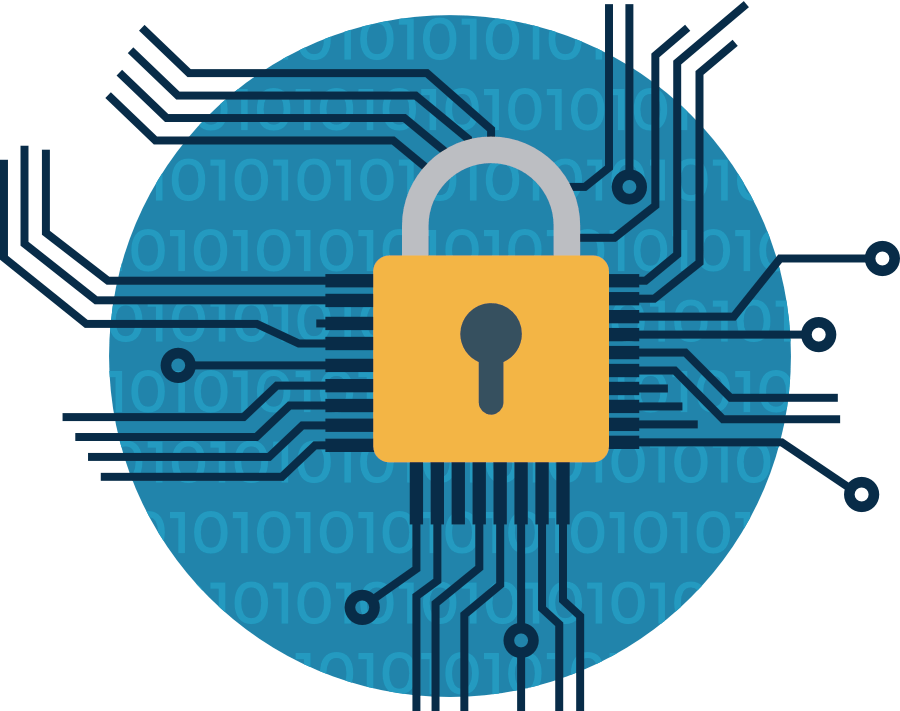

ENCRYPTED NETWORKS
Previous
Next
Connecting to a Secured Encrypted Network, reduces the risk of your PC getting infected by any kind of malware.
Encrypted Networks at their majority provide security for their users and are reliable for any online act like purchases,
transmission of personal data and any other kind of information.
Having launched Encrypted Networks, means that the network should require users
to login so that only authenticated users are allowed to use the network.
Data should be encrypted so that secure data cannot be intercepted and transmitted to unauthorized users.
As another measure of security, Computers and Servers on the trusted network must be equipped with software like
Virtual Private Network
(VPN), which allows remote work with secure data transmission.

Public WiFi is a form of convenience that’s taken for granted these days.
Most people expect to get themselves a free WiFi access at several important spots ranging
from the airport to that of a restaurant.
But is Public Wifi completely safe for use?
The answer is No.
Despite being free-to-use and able to work wonders in case of an emergency, the truth behind them is scarier.
A Public Wifi connection doesn't guarantee a lot of reliability, which means that your data can be stolen at any time and way.
Hackers love Public Networks, and they are the reason that 12% of the USA's Population in 2018 got
their financial data stolen
while being connected to a Public Wifi.
It is essential not to use public networks for the sake of your own personal data's security